Faster & Smarter Development
with Drupal Console
About me
Jesus Manuel Olivas
Drupal 8 Solutions Engineer
I work for FFW
(and you should too)
Topics
Drupal Console the what, why and how.
Generate code/files required by a Drupal 8 module.
Interact and Debug Drupal 8.
Learn Drupal 8.
Write an integration.
Automate command execution.
Remote command execution.
Contribute to the project and Roadmap.
What is the Drupal Console?
The Drupal Console is a CLI tool to generate boilerplate code, interact and debug Drupal 8.
jmolivas
Starting with the topic of the day. I will exaplin you What is the Drupal Console?
The Drupal Console is a suite of tools that you run on the (CLI) to generate boilerplate code and interact with a Drupal 8 installation.
Yes I know this sounds like a tool you already know, and it's called drush.
There are similitudes and differences, that I will show ypu during this presentation.
But ... I want to clarify one important point:
Drupal Console is not a Drupal Module.
Drupal Console is a Symfony Application.
The DrupalConsole application takes advantage of Symfony Console Component and other third party libraries.
DrupalConsole has been built to utilize the same modern PHP practices which were introduced in Drupal 8.
Who maintain this project?
Eduardo García | @enzolutions
Jesús Manuel Olivas | @jmolivas
Omar Aguirre | @omers
enzo
This project was started back in 2013 by David Flores and myself (Jesus Manuel Olivas) we are both Mexican developers.
But as the project start getting some traction, two other developers join to help co-maintaing it.
Omar Aguirre another developer from Mexico.
And Eduardo García a Colombian developer living in Costa Rica.
Supporting organizations
Why should you care about it?
Drupal is more tehcnically advanced
@omers
Drupal 8 is more technically advanced compared to its predecessor and managing the increasing complexity of Drupal 8 could be a daunting task for anyone. Drupal Console is a suite of tools to help manage that complexity. Writing a Drupal 8 module now involves a lot more boilerplate code and there is a lot you need to know and do just to get started building a new module.
I will list some differences between Drupal 8 and 7, related to writing a module.
Drupal 8 is object oriented and Drupal 7 is mostly procedural.
Each class will need a namespace and must be created within and specific directory.
Each class must include other classes defined within a namespace.
Each class could extend or implement another classes.
Drupal 8 takes advantage of external libraries.
Drupal 8 uses .yml files for configuration.
Drupal 8 uses plugins which provide reusable pieces of functionality.
Drupal 8 uses PHP annotations. The Drupal 8 plugin system uses them to describe plugins and they are used by Drupal to discover your plugin.
In every web application, in any language, you always have one goal, read and understand the incoming HTTP request in order to create and return the appropriate HTTP response.
In every web application regardless of the used language or framework.
You are probably working with PHP using Symfony, Silex, Drupal or Laravel or may you are working with Pyhton using Django or Flask, how about Ruby using Rails or Java developing with Scala.
Your only goal as a web developer is to properly understand the incoming HTTP Request in order to build and return and appropiate HTTP response.
The client sends an HTTP request. When I said client this could be a web-site, mobile app or even an application runing from the terminal.
Now as I mentioned before it is your responsability to build a proper response, this will be based on what the client is asking for, this could be anything form a HTML page to JSON, XML even and attachment or a multimedia file as well.
The Request/Response Flow
Well the flow looks like this.
Symfony/Silex/Drupal use the front controller design-pattern. This mean every single request is routed from a PHP file app.php or app_ENV.php in the case of Symfony and index.php if using Silex or Drupal. The main goal of the front controller is to bootstrap your Application and performing the global initialization of required objects.
Also takes care of extracting information form the requested URL about the path and match this on the routing system and then execute the proper Controller.
Routing
A route is a map from a URL path to a controller.
We can define a Route as a map from a URL to a controller.
Is in the route definition where where we especify the path for a resource and the controller that will be executed.
Now that I have been mentioning the Controller
Controller
A controller is a PHP method or call-back that takes information from the HTTP request and constructs and returns an HTTP response.
A Controller is a method or call-back that takes information from the HTTP request object and based on the implemented code contructs and returns a proper HTTP response.
Lets see how these two looks in code.
How does Drupal Console help?
Generate boilerplate code for Drupal 8.
Interact and debug Drupal 8.
Learn Drupal 8.
The main goal of DrupalConsole is, to help you developing faster and smarter with Drupal 8.
Drupal Console provides a number of commands for creating module scaffolding and boilerplate code. For each command, you will be asked a series of questions about what you want to generate.
Drupal Console allows you to interact with your Drupal installation from rebulding cache, installing modules, debugging the syustem to configuration management.
You can even learn Drupal 8, inspecting the generated comment blocks while using --learning option. (similar to examples module)
Download Drupal Console
jmolivas
Now, let me show you how to download and use the DrupalConsole project.
Using the installer
# Run this in your terminal to get the latest project version:
curl https://drupalconsole.com/installer -L -o drupal.phar
# Accessing from anywhere on your system:
mv drupal.phar /usr/local/bin/drupal
# Apply executable permissions on the downloaded file:
chmod +x /usr/local/bin/drupal
# Check and validate system requirements
drupal check
# Copy configuration files to user home directory:
drupal init --override
jmolivas
There are different ways to get the project on your local machine.
My recomendation, for getting the project on your local machine is by using the installer.
You can install the Drupal Console locally by running the installer in your project directory, the installer will take care of downloading the necesary files to run drupal console on you computer.
The installer script will simply check some php.ini settings, warn you if they are set incorrectly, and then download the latest console.phar in the current directory.
You can use it as local file by typing php console.phar
But if want to access DrupalConsole from anywhere on your system, you need to move to a global accesible path.
NOTE: In this example I am moving the executable phar file to "/usr/local/bin/drupal".
Using Composer
$ composer global require drupal/console:@stable
# download path:
# ~/.composer/vendor/drupal/console
# run it using:
$ ~/.composer/vendor/bin/console
Gitbook - Using Composer
You can install this project using composer global require command.
Same as the instaler example, if may you want to access globally. In this case you need to add the binary directory to your class path.
Using Drupal Composer
$ composer create-project
drupal-composer/drupal-project:8.x-dev
drupal8.dev
--stability dev
--no-interaction
https://github.com/drupal-composer/drupal-project
You can also, use the DrupalComposer project a "Composer template for Drupal projects." and use composer create-project command.
This template take care of downloading Drupal8, Drush, DrupalConsole and other tools.
Using a Virtual Machine / Container
You can also take advantage of a Virtual Machine to provide the LAMP stack plus Drupal 8, drush, DrupalConsole and other tools.
Updating the project
$ drupal self-update
$ php console.phar self-update
$ composer global update drupal/console
jmolivas
Drupal 8 is under heavy development, to keep in sync with the latest changes. The easiest and recommended way of updating Console is using the self-update command.
Copy configuration files
drupal init
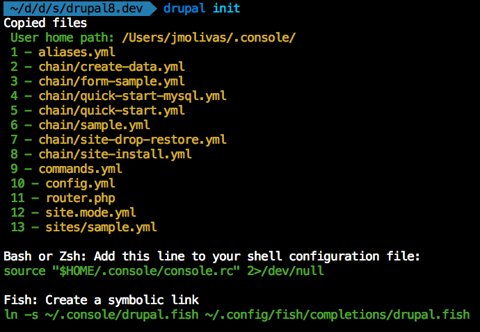
Use the init command to copy the configurations files, overriding values on these files is how you can change DrupalConsole behaviour.
Validate system requirements
drupal check
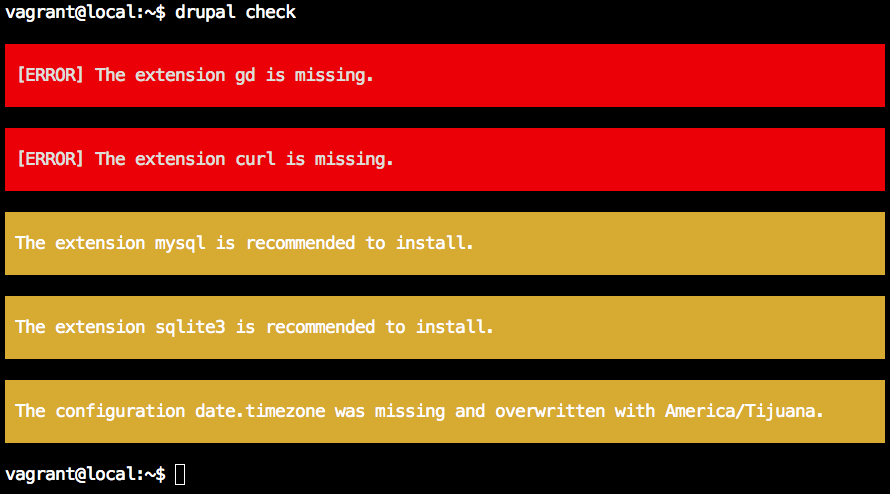
chain
drupal chain --file=~/.console/chain/quick-start-mysql.yml
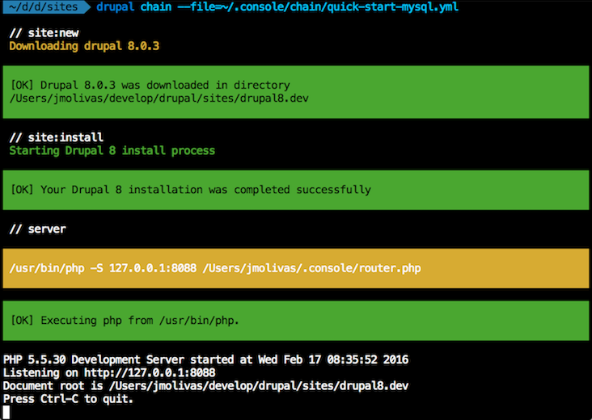
drupal chain --file=~/.console/chain/quick-start.yml
The need for it became clear when we were executing commands like "generate:controller" and needed to execute another command by hand such as "router:rebuild" to rebuild the routing system.
The initial idea was to chain command execution within commands.
~/.console/chain/quick-start-mysql.yml
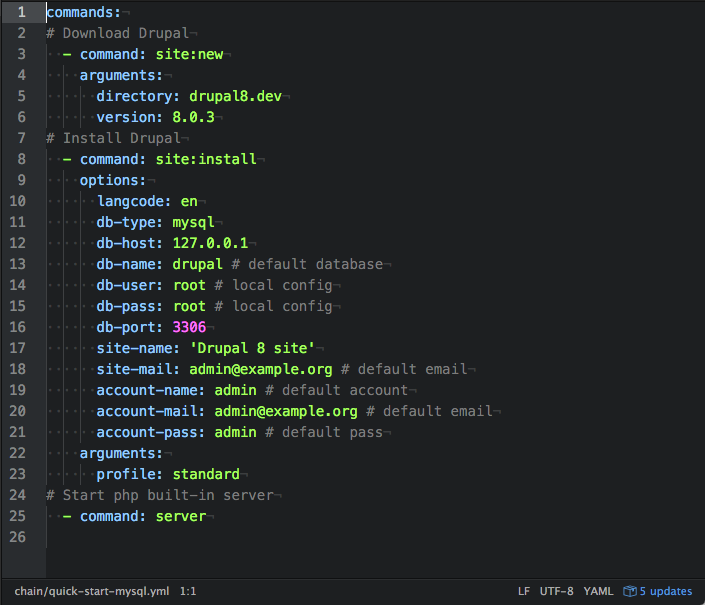
When that functionality was completed I had a discussion with the other project maintainers and we came up with the idea to create a command that could read a configuration file containing a queue and execute several commands based on the sequence defined in the configuration file.
We decide to use a standard YAML file extension and not go with something like chain extension because we did not want to add a new Drupalism to the project.
How this command can help you?
You can create your own chain command and define the common Drupal 8 features you use while writing a Drupal 8 module and execute one command to have those features generated, as example:
Execute Drupal Console
# change directory to site path
$ cd /var/www/drupal8.dev
$ drupal
# use --root option
$ drupal --root=/var/www/drupal8.dev
Generate the code and files
required by a Drupal 8 module.
omers
Remember what I told you about, Drupal Console provides a number of commands for creating module scaffolding and boilerplate code.
Creating a module
Create a new directory named 'example' at 'modules/custom' directory.
Create an 'example.info.yml' file at 'modules/custom/example' directory.
Custom and contributed modules must be created at modules folder in the root directory.
generate:module
In order to extend Drupal we need to add a module, Now I will show you how DrupalConsole can help us on this task.
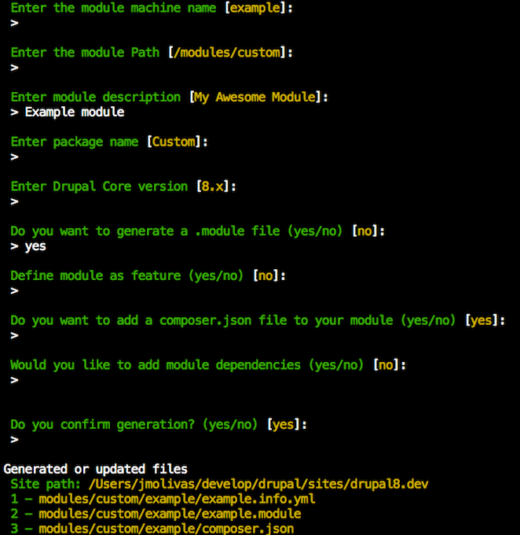
jmolivas
As you can see, we are using the interactive mode where the user can provide the basic information (like module, name, description, package ...) to generate a custom Drupal 8 moddule.
We can alose see a report with the generated/updated file list.
As result we get a fully funcional module brand new module. Ready to be used on you Drupal 8 installation.
Creating a Custom Page
Make sure your HelloController class extends from ControllerBase core class.
generate:controller
In Drupal 8 we won’t need hook_menu() anymore as we make heavy use of the Symfony2 components to handle the routing. This involves defining the routes as configuration and handling the callback in a controller (the method of a Controller class).
Creating a Config Form
Create a 'ExampleForm.php' class at 'src/Form' Directory.
Create a route with path to '/admin/config/example/example' at 'example.routing.yml' .
Add example.links.menu.yml file and set system.admin_config_system as parent.
Make sure you use _form instead of _controller on route defaults.
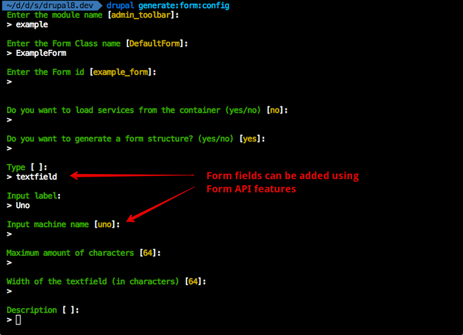
jmolivas
Same as in the previous example, I am showing you the interactive mode.
What do you need to generate a Form in Drupal 8.
You need a route, a form class and some field definitions,
Well all those features are added by the generator.
As you can see here, if you answer yes to "Do you want to generate a form structure" question, you will be ask to add fields.
The generated form included an integration with the configuration system, in order to store the user input values, when submiting the form.
example.routing.yml
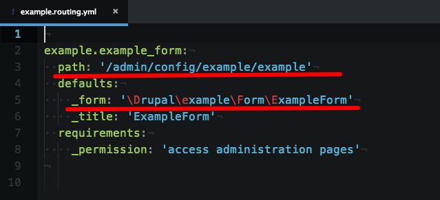
In order to use this form we need to provide a route for it.
DrupalConsole creates for you the routing definition and use ther proper configuration, to specify that the target is a form class. And the value is the class name we just generated.
src/Form/ExampleForm.php
In Drupal 8, form definition functions are all grouped together inside a class.
That class must be defined on a specific namespace and the file created on the proper directory.
The generator command, also added the required use statements and extend the proper class.
src/Form/ExampleForm.php
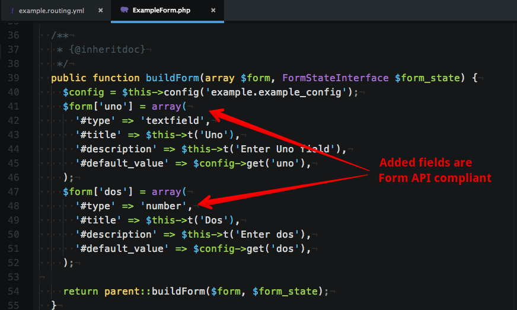
Generated input fields are Form API compliant.
src/Form/ExampleForm.php
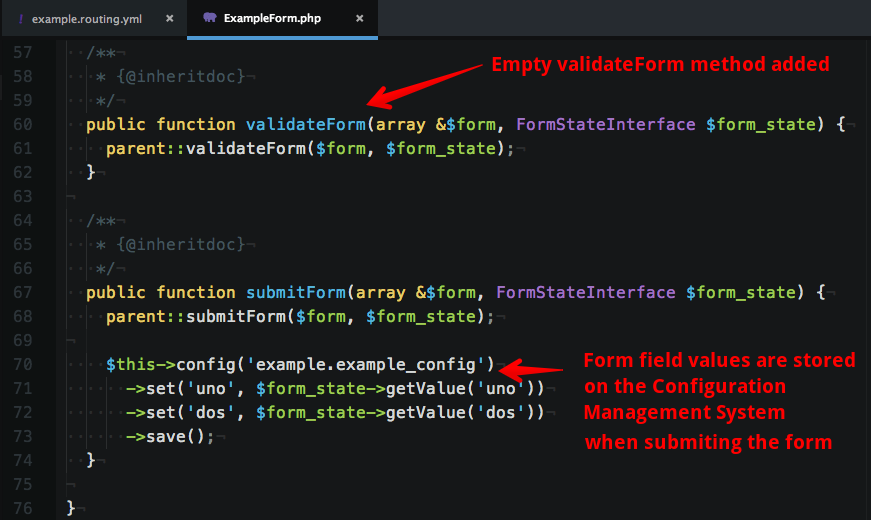
DrupalConsole also generates the integration with the configuration managemente in order to save user input.
Creating a Block (Plugin)
Create a 'ExampleBlock' class at 'src/Plugin/Block' .
Extend from BlockBase core class.
Add @Block annotation.
Add blockForm , blockSubmit and build methods.
Adding the @Block annotation, make this block discoverable by the system.
generate:plugin:block
$ drupal generate:plugin:block
--module="example"
--class="ExampleBlock"
--label="example_block"
--plugin-id="example_block"
--no-interaction
enzo
So far we have seen the interactive mode, which it is a little bit more flashy since you can see the questions and the entered answer.
But, starting from now we will show how to execute commands passing inline arguments, which is way more faster.
Make sure while executing commands using the inline mode to pass the "--no-interaction" op
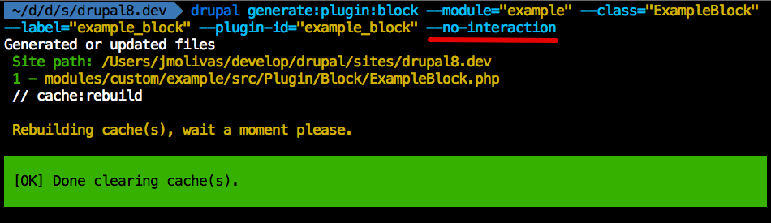
jmolivas
Blocks in Drupal 8 are plugins, creating a plugin can be a little tricky, because you need to add annotations in order to this new block can be discoverable by the system.
But do not worry, beacuse console take care of adding them.
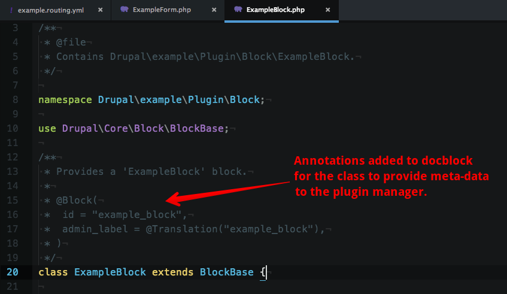
DrupalConsole generation add the required plugin block type anotations.
Using these annotations we let Drupal know that we want to register a new block type
generate:entity:content
$ drupal generate:entity:content
--module="example"
--entity-class="Foo"
--entity-name="foo"
--no-interaction
jmolivas
I have been showing you commands generating two or there files, which is probably not too impresive.
Remember what I told you about complexity in Drupal 8 ?.
Adding an entity on Drupal 8 is a complex task.
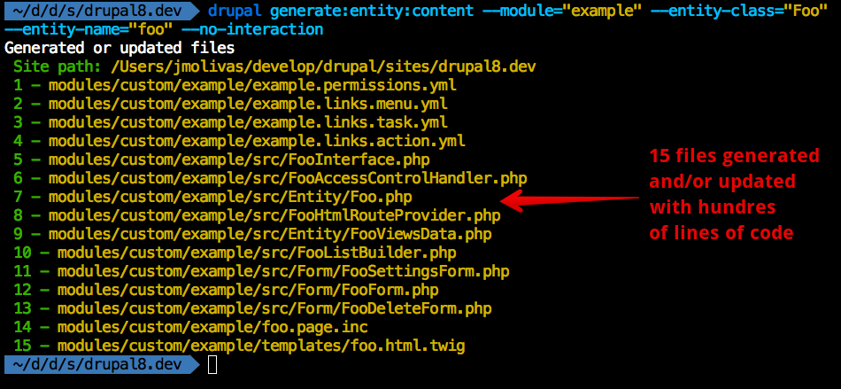
jmolivas
Because you need to create/update about 14 files.
Those files are classes, forms, routes and menu links.
Entities are plugins and require to add annotations same as in the block generation that code is added by the command.
The generated entity is fieldable from de UI and provides Views integration.
Interact and debug Drupal 8.
omers
We started the project as a scaffolding code generator.
But eventually we have needed to test the generated code.
For that reason we added commands to interact with the Drupal Installation.
drupal container:debug
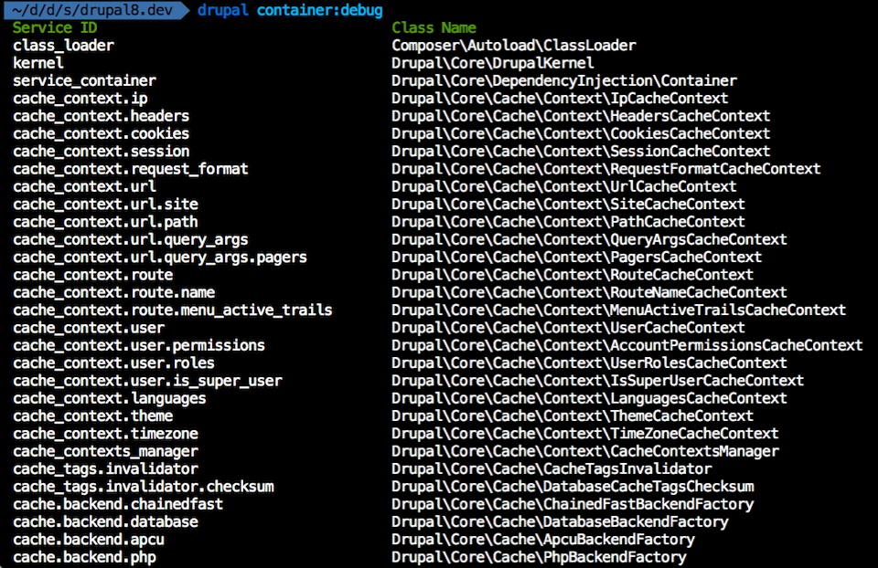
container:debug
drupal container:debug | peco
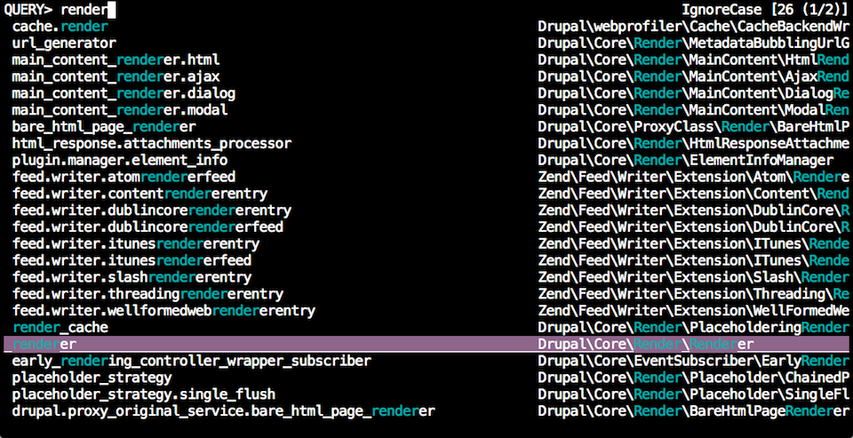
Using the container:debug command, you can list the registered services on service container within the current Drupal instance.
drupal router:debug
drupal router:debug | peco | awk '{print $1}' | xargs drupal router:debug
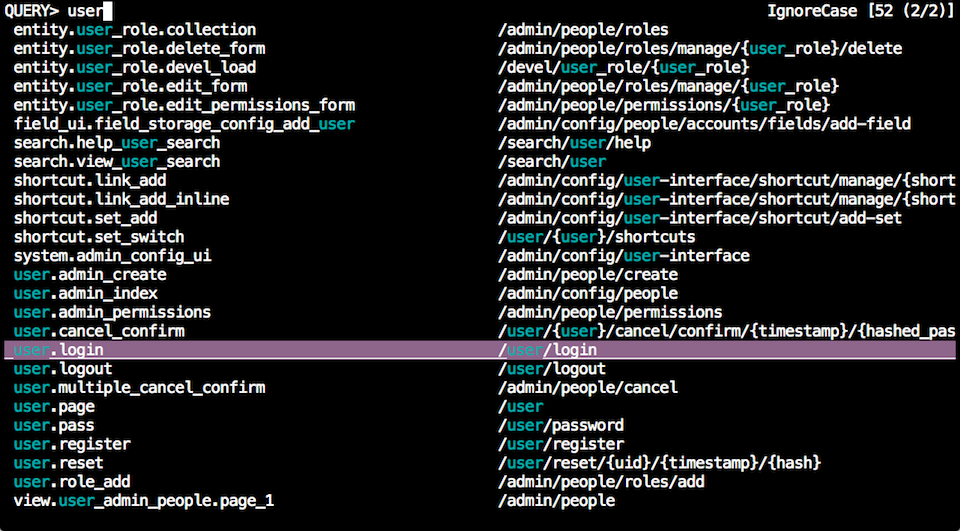
Similar to the previous example.
The router:debug command, helps you list the registered routes on the routing system, within the current Drupal instance.
drupal router:debug user.login
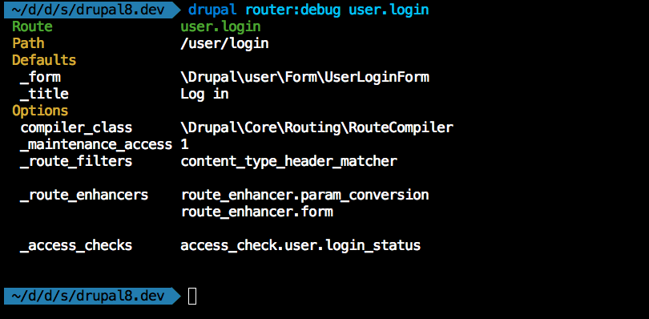
You can inspect a route definition just by passingthe route_name as argument to the router:debug command.
drupal site:mode dev [1/2]
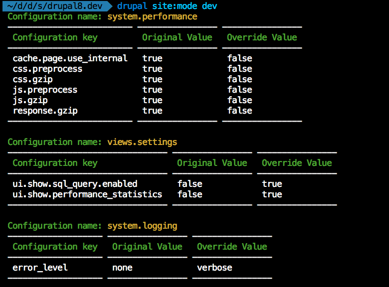
Performance
/admin/config/development/performance
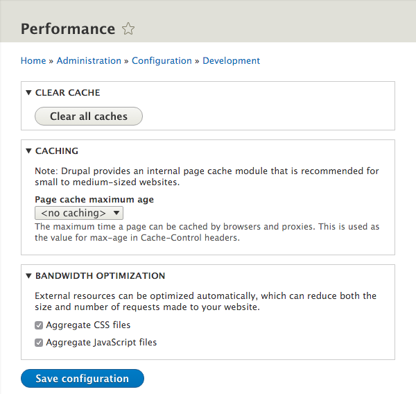
Views settings
/admin/structure/views/view/content
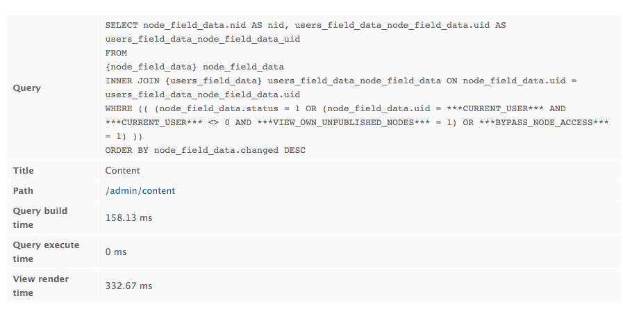
Logging and errors
/admin/config/development/logging
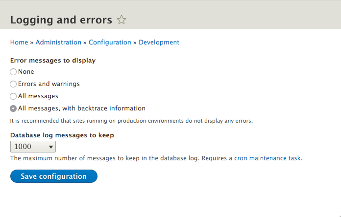
drupal database:log:debug --reverse
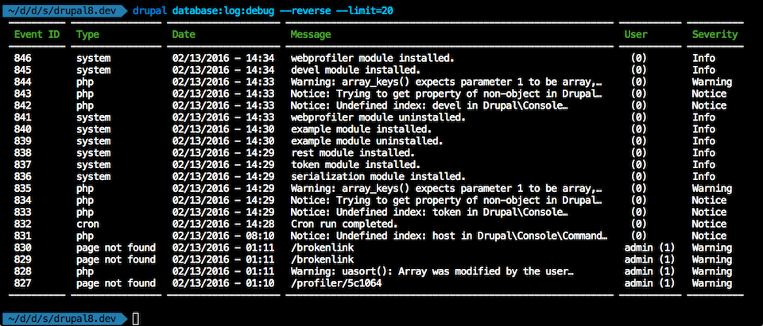
drupal database:log:debug 828
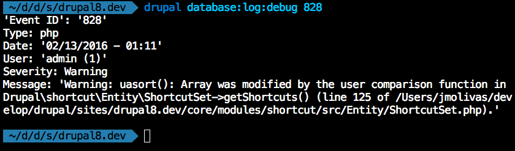
drupal site:mode dev [2/2]
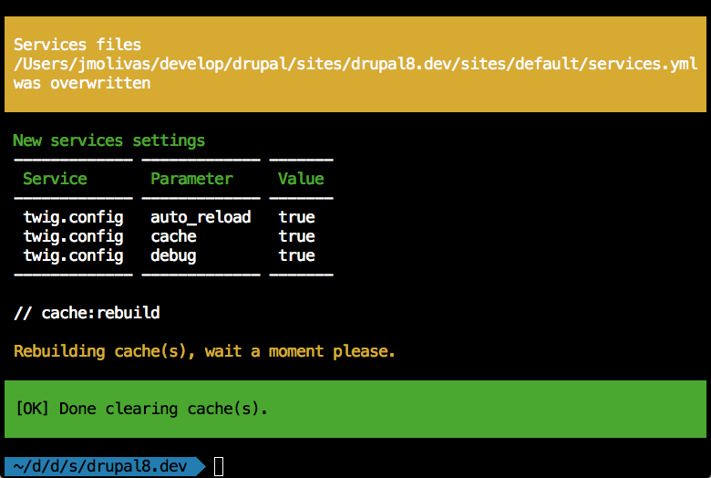
site
site
site:maintenance [ON/OFF]
site:status
config
config
config:debug
config:edit
config:export
config:export:content:type
config:export:single
config:export:view
config:import
config:import:single
config:override
user
user
user:login:clear:attempts
user:login:url
user:password:hash
user:password:reset
Clear login failed attempts for an account.
Returns a one time user login url.
Generate a hash from a plaintext password.
Reset password for a specific user.
Use --learning option
$ drupal generate:controller
--module="example"
--class="ExampleController"
--routes="title:hello method:hello path:/hello/{name}"
--test --learning
jmolivas
I can imagine some of you, are thinking in use the generated code to learn Drupal 8 by applying Reverse Engineering.
However, this approach coud not be enough.
For that reason we provide you with an option to provide extra information to the generated code.
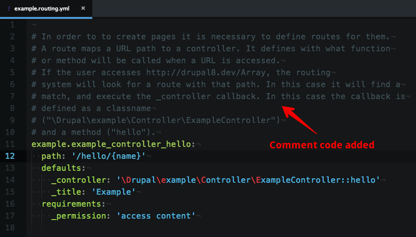
When executing a command using the "--learning" option, aditionaly to the generated boilerplate code, a commented block messages will be added, describing the code functionality.
NOTE: This option is only available for the "generate:controller" command, please let us now, where do you think this could be helpful.
Write an integration
jmolivas
If you are a module maintainer. You can write an integration to take advantage of drupal console features.
generate:command
$ drupal generate:command
--module="example"
--class-name="HelloCommand"
--command="example:hello"
--no-interaction
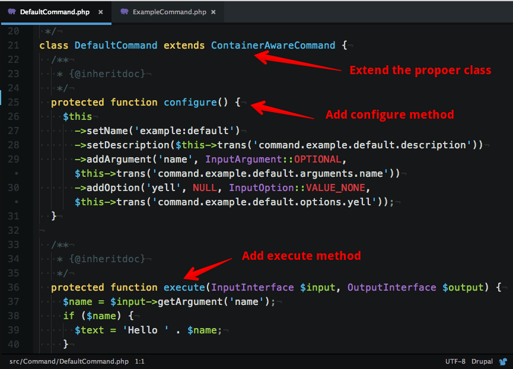
enzo
This command will generate all the boiler-plate code to write a new command within your drupal 8 module.
From there you can implement your bussines logic.
webprofiler
https://www.drupal.org/project/webprofiler
jmolivas
Let me tell you about the awesome webprofiler project. Which is an implementation of Symfony WebProfiler.
The web-profiler collects information for all requests.
You can see how long the page take to load, how much memory was used, the number of executed SQL querys, the loaded forms and blocks, the current logged user between others.
This module was the first module to take advantage of Drupal Console features.
webprofiler:benchmark
This command allow you to execute several request against your Drupal site and show you a result of average execution time and cosumed memory.
webprofiler
webprofiler:benchmark
webprofiler:export
webprofiler:list
Global configuration
~/.console/config.yml
application:
...
remote:
user: root
port: 22
console: /usr/local/bin/drupal
keys:
public: ~/.ssh/id_rsa.pub
private: ~/.ssh/id_rsa
passphrase: ~/.ssh/passphrase.txt
Site configuration
~/.console/sites/sample.yml
local:
root: /var/www/drupal8.dev
host: local
dev:
root: /var/www/html/drupal
host: 140.211.10.62
user: drupal
prod:
root: /var/www/html/docroot
host: live.drupal.org
user: drupal
console: /var/www/html/docroot/console.phar
site:debug sample.dev
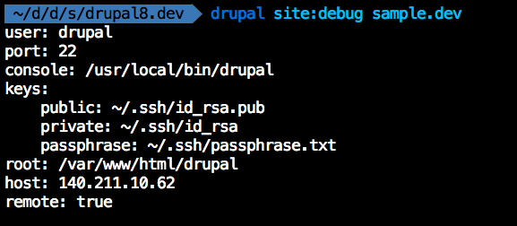
--target || @
$ drupal --target=sample.dev cr all
$ drupal @sample.dev cr all
Remote site execution
site:debug list the available configured sites.
Passing the site as argument display the site configurations.
Using --target option allow us to:
Execute commands at any local or remote site.
Passwordless login.
Great for workflow automation.
In this case I did run cache:rebuild command, but you can execute any drupalconsole command available on the remote server.
#Protip 1
Use multilanguage feature
# ~/.console/config.yml
application:
environment: 'prod'
language: en
editor: vim
temp: /tmp
drupal config:set language es
The DrupalConsole project is multilingual, jsut by changing the language value, you can tun the project in a supported language.
Do you remember the "--learning" option I mentioned before, the commented messages also support this multilingual feature.
#Protip 2
Use default values
# ~/.console/commands.yml
application:
...
default:
commands:
generate:
controller:
options:
module: my_current_project
You can set default values for commands (options and arguments), this is useful when you are working on a project and you dont want to type the module every time you generate a component.
#Protip 3
Disable contributed commands
# ~/.console/commands.yml
application:
...
disable:
modules:
- broken_module_name_one
- broken_module_name_two
Since any module can add provide an integration and add comands.
Disabling those module-commands to get loaded could be useful, when any those are introducing issues or errors.
#Protip 4
Use --generate-inline
$ drupal generate:entity:config --generate-inline
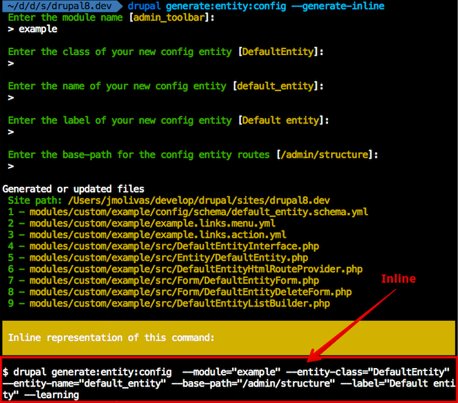
You do not need to know each required option and argument, you can execute a command using the interactive mode, and just by passing the "--generate-inline" option.
The command will output the inline instruction, to execute the command the next time.
#Protip 5
Use --generate-chain
$ drupal generate:module --generate-chain
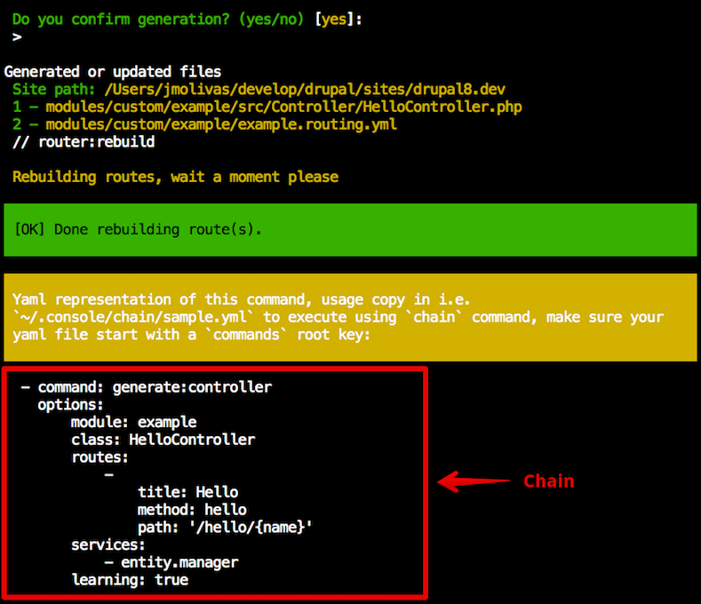
Executing a command and passing the "--generate-chain" option.
The command will output the YAML code, to copy and paste, this could be used when executing the chain command.
How to contribute?
jmolivas
I mentioned about integration, using as example the webprofiler module, and I like to talk about contribution.
Anyone can contribute, you can add new features, write an integration with your custom module, improve transaltions and documentation.
But first you need to get the code right.
Getting the project
Fork your own copy of the Console repository
http://bit.ly/console-fork
Clone your forked repository.
$ git clone git@github.com:[github-user]/DrupalConsole.git
Download dependencies using componser.
$ cd /path/to/DrupalConsole
$ composer install
PHPQA all-in-one Analyzer CLI tool
PHP Parallel Lint
PHP_CodeSniffer
PHPLOC
PHP Mess Detector
PHPUnit
Running PHPQA manually
$ cd /path/to/DrupalConsole
$ phpqa analyze --files=src/
Running PHPQA automatically
$ vim .git/hooks/pre-commit
# Paste this:
phpqa analyze --git
You can run it manually by executing the phpqa command and indicating the files or directory to scan by using the "--files" option.
Or maybe you can setup a pre-commit git-hook and use the "--git" option to scan all files added to git index.
Contributors
enzo
This is the hall of fame of Drupal Console.
Without this people I would not be speaking at here.
Spread the word and love.
@drupalconsole | #drupalconsole
jmolivas
We need all of the help we can get, please use the project and love it or hate it, let us know.
Providing feedback.
Asking for new features.
Creating issues and sending pull requests.
Talking and Tweeting about this project and Proudly showing your Drupal Console sticker. Ping us for stickers at the end.
Increase code coverage.
Improve documentation and translations.
Improve verbose code-output.
Current and upcomming implementations
Webprofiler (devel submodule)
Meta tag
Drupal Commerce
Scheduled Updates
Rules
Casper (theme)
[Your module here]
I already talk about the webprofier integration.
But now I will list the modules with plans or currenlty working on implementing DrupalConsole commands.
MetaTag
Rules
Your module?
What if ... I am not a CLI guru
jmolivas
Before we wrap up, I like to talk about a planned feature.
GUI for the CLI.
WebApp => ReactJS
jmolivas
As mentioned before the goal of this project is provide a tool easy to use for everyone.
We are plannig a GUI for the CLI.
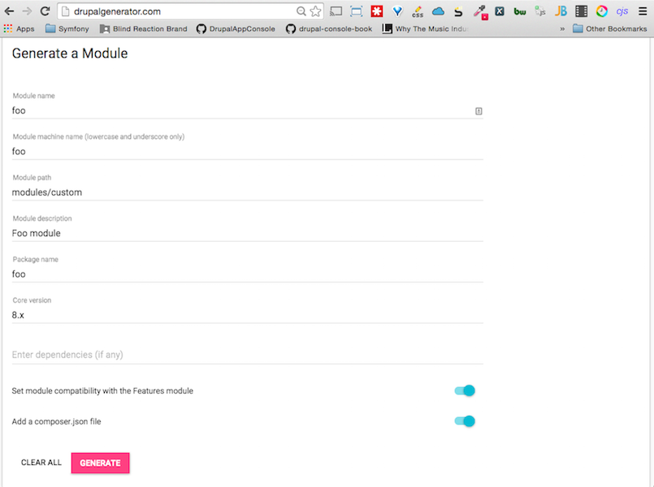
http://drupalgenerator.com/
jmolivas
We really want to make the tool even more accessible to all site administrators of Drupal 8.
Adding a GUI for Drupal Console as an alternative to the CLI.
This could be especially useful for site builders wanting to take advante of this tool without needing to use the command line.
It could be used for code generation in the form of a downloadable compressed file.
How about a Native app?.
NativeApp => Electron
Questions & Feedback
Feel free to stalk me or ask any question at:
@jmolivas | @drupalconsole